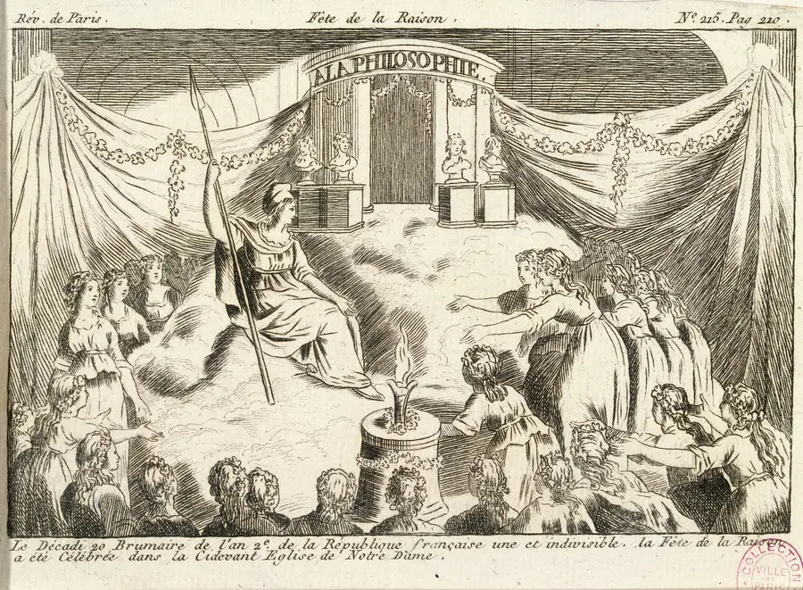

PARIS, 17 DE JULHO DE 1794
Condenadas naquela mesma manhã pelo Tribunal Revolucionário como “fanáticas e sediciosas”, sem advogado de defesa e com a única testemunha citada ausente, as carmelitas de Compiègne atravessaram Paris nas carroças no fim da tarde cantando o Miserere e a Salve Rainha, e ao pé do cadafalso ajoelharam-se, cantaram o Te Deum, renovaram os votos e entoaram o Veni Creator.
A primeira a ser chamada foi a irmã Constança de Jesus, a mais jovem e a única noviça, que pediu à priora licença para morrer e subiu os degraus cantando o salmo Laudate Dominum, e a última foi a própria Madre Teresa de Santo Agostinho, que viu morrer todas as filhas antes de morrer também, enquanto a multidão, que costumava gritar nessas horas, ficou calada.
O livro conta como a Revolução, que começou com padres sentados entre os deputados, fez da Igreja primeiro funcionária do Estado e depois inimiga pública, e o que aconteceu na Vendeia, sem esconder os crimes cometidos dos dois lados.
PARTE III · PERSEGUIÇÃO, APARIÇÕES E RENASCIMENTO